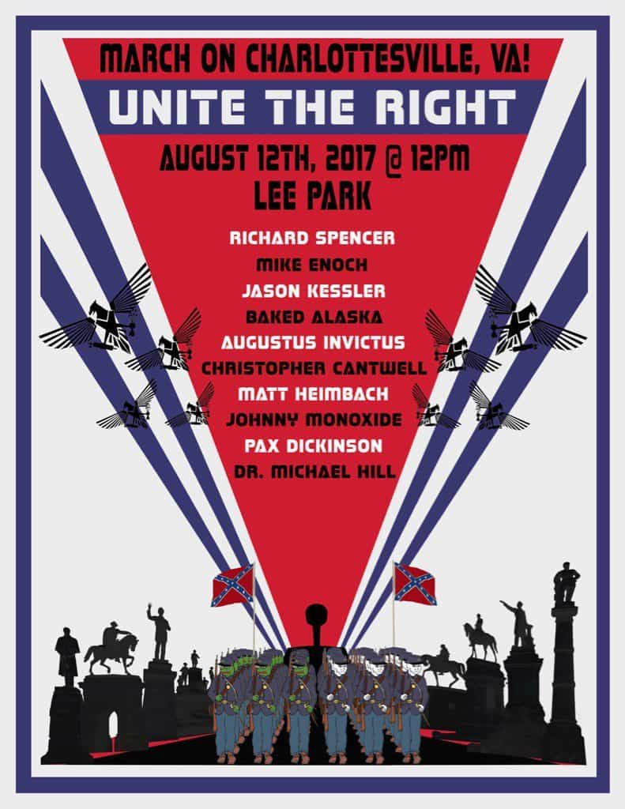

Earlier today, the scheduled Unite the Right rally in Charlottesville, Virginia was shut down after violent antifas launched a riot. According to both organizer Jason Kessler and speakers Richard Spencer and Daniel Friberg, local police actively aided the antifas by refusing to restrain them and by blocking Kessler, Spencer and other speakers from entering the rally itself. Police then declared the rally an “unlawful assembly,” ordering attendees to disperse under threat of arrest. Democratic Governor Terry McAuliffe also declared a state of emergency in the city, sending the National Guard into Charlottesville.
The shutdown of Unite the Right shows how entrenched radical leftists are in the government, law enforcement, and the media. The Democrat-controlled Charlottesville city government, in cooperation with the Democrat-controlled Virginia state government, local law enforcement, and violent leftist groups conspired to disrupt a peaceful right-wing rally. I spoke to Kessler and Friberg briefly about what happened at the rally and what they and the other organizers plan to do next.
The Origins Of Unite The Right

Jason Kessler launched Unite the Right last month as a response to the Charlottesville city government attempting to remove a statue of Confederate general Robert E. Lee in the city’s Lee Park. For the past several months, Democrat-controlled city governments in New Orleans and other Southern cities have been removing statues of Confederate generals and other historical figures due to their supposed “racism,” a deliberate attempt to destroy the cultural heritage of white Southerners.
As an independent journalist, Kessler has extensively reported on the corruption and anti-white bigotry of Charlottesville’s leftist government, particularly its black vice mayor, Wes Bellamy. Bellamy has been caught making racist statements about whites on Twitter, as well as making statements supporting rape, comments that would get a white and/or Republican politician run out of office. Kessler also exposed Bellamy’s “slush fund,” a “nonprofit” called Young Black Professionals Network of Charlottesville that is operating in violation of both the IRS and Virginia law.
Unite the Right was designed as an event that would bring together disparate sectors of the American right—the alt right, the alt lite, Southern nationalists, and more—in defense of Southern and white heritage. In addition to Kessler and Richard Spencer, speakers included libertarian radio host Christopher Cantwell, technologist and Counter.Fund founder Pax Dickinson, Traditionalist Worker Party founder Matthew Heimbach, and more. Fans and members of The Daily Stormer, the Proud Boys, and r/The_Donald were also participating in the rally, promising to make it the biggest right-wing protest in the U.S. in recent memory.
Unite the Right had met with stiff opposition almost immediately after its announcement, with antifas organizing a counter-protest and local politicians condemning the event. Airbnb has also banned rally attendees from using the service to rent places to stay. Several days before the rally, the Charlottesville city government revoked Kessler’s permit for the event in an attempt to shut it down. With the help of the ACLU, Kessler successfully appealed, with a federal judge restoring Unite the Right’s permit.
Even still, it looked like Unite the Right was set to be a major success. A torchlight gathering in Lee Park organized by Kessler and Spencer the night before the rally was a big win, with only a small, scattered group of antifas showing up to cause trouble. However, few people saw what was going to come next.
Unite The Right Shut Down By Antifas And Police
As seen on various livestreams of Unite the Right, attendees arrived at Lee Park in groups with tight security, walking past antifas and counter-protesters. Antifas were also witnessed throwing cans, rocks and other objects at attendees, as well as setting off smoke flares; in response, security armed themselves with shields and formed a line around the Lee statue in the park. By my estimation, roughly 500 to 1,000 attendees showed up in support, with as many antifas and possibly more.
According to a phone interview I conducted with Kessler, the police were supposed to have “a security plan in place that was going to involve them escorting our speakers into the park,” then controlling access to keep the antifas from entering. However, when he, Spencer and the other speakers arrived at Lee Park, contrary to the plan, only half of the park was reserved for Unite the Right, with antifa taking up the other half.
Kessler also stated that there was insufficient protection due to a lack of Charlottesville city police (only state police) on the scene, and “Spencer, Baked Alaska, Horus the Avenger and a number of other people were maced in the face on the way into the event.” State police denied the speakers entry into the park, claiming they needed authorization from Charlottesville police. Kessler was unable to reach them, and when they finally arrived twenty minutes later, they told him that they were “declaring an unlawful assembly and they had to leave.”
Around this time, fights began to break out between antifas and Unite the Right attendees, with police refusing to intervene or protect the attendees. While Kessler left, Richard Spencer stayed behind for several minutes arguing with the police before he was forced to disperse. In a Periscope video, Spencer asserted that Unite the Right had been set up by the police and city government; since they were legally forced to allow the rally go on, they instead allowed it to be canceled by refusing to restrain antifas or keep them from attacking attendees.
When I asked Kessler about this, he confirmed Spencer’s version of events, claiming that the police had allowed the leftists to exercise the “heckler’s veto.” What happened at Unite the Right is similar to what happened to President Donald Trump’s rally in Chicago last year and Milo Yiannopoulos’ planned speech at DePaul University, events which leftists were able to shut down by instigating violence, with police refusing to intervene.
I also spoke to AltRight.com European editor Daniel Friberg, who was slated to speak at the event. Friberg told me that he was maced heavily by the antifas when he attempted to enter Lee Park. According to him, following the police’s dispersal order, cops began “pushing the entire audience” directly into the antifas’ path with the intent of making fights break out. Friberg and several others stayed behind to assist attendees in getting out safely; he also said that several rally attendees were arrested, though they have since been released.
In addition to physical attacks, leftists launched cyber-attacks on several websites who were affiliated with Unite the Right. Alt right radio and TV network Red Ice was taken offline by antifas, who pledged to dox its subscriber base. The hackers also seized the Twitter accounts of Red Ice hosts Henrik Palmgren and Lana Lokteff, the former of whom was at the rally and was going to live stream. (As of this writing, Palmgren and Lokteff have retaken control of their Twitter accounts.) Hackers also attempted to DDoS AltRight.com, though they failed to take it offline.
What Comes Next?
As of this writing, chaos is still unfolding in Charlottesville. In my interview with Kessler, he told me that he was planning to sue the city with the help of the ACLU, hoping to “sue for multi-million dollar damages for this fiasco.” Additionally, someone drove a car through a crowd of antifas, resulting in numerous injuries and killing at least one. According to Friberg, the car incident happened a half-hour after Unite the Right attendees were evacuated from Lee Park, and the driver was not part of the rally.
While the dust has yet to settle, it’s clear from what happened that the left will pull out all the stops to prevent nationalists and right-wingers from organizing in the U.S. Antifas have the government and law enforcement on their side, and when push comes to shove, your local police are more likely to arrest you than them. Right-wingers will need to be careful from now on, because it’s clear that we are on our own.
Additionally, the riot may turn out to be a major propaganda win for the alt right. While the fake news media has been trying to smear Unite the Right as “Nazis,” every live stream and broadcast of the event clearly showed rally attendees being peaceful and antifas instigating violence. While the left may have won a battle today, it could come at the cost of them losing the war.
Read Next: Anti-fascist Protesters Try To Shut Down Neo-Nazi Rally In California, Get Stabbed